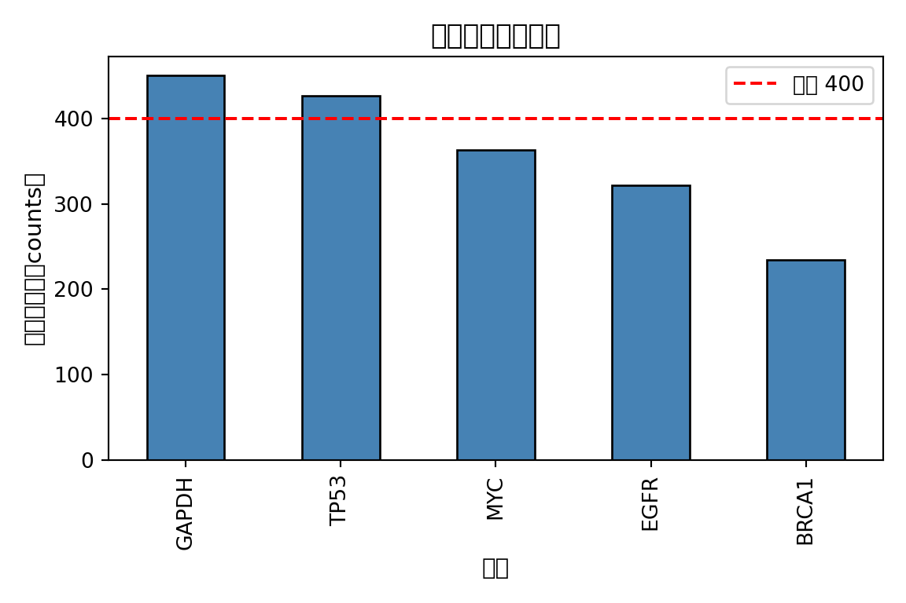

Code
import numpy as np
import pandas as pd
import matplotlib.pyplot as plt
import matplotlib as mpl
# 配置中文字体（依次尝试常见中文字体，找不到则回退到默认）
mpl.rcParams['font.sans-serif'] = ['Arial Unicode MS', 'SimHei', 'DejaVu Sans']
mpl.rcParams['axes.unicode_minus'] = False # 修复负号显示为方块的问题
# 1. 构造模拟基因表达矩阵（行=基因，列=样本）
np.random.seed(42)
genes = ["TP53", "BRCA1", "MYC", "EGFR", "GAPDH"]
samples = ["Sample_A", "Sample_B", "Sample_C", "Sample_D"]
expr_matrix = pd.DataFrame(
np.random.randint(10, 1000, size=(5, 4)),
index=genes,
columns=samples
)
print("=== 基因表达矩阵 ===")=== 基因表达矩阵 ===Code
print(expr_matrix) Sample_A Sample_B Sample_C Sample_D
TP53 112 445 870 280
BRCA1 116 81 710 30
MYC 624 131 476 224
EGFR 340 468 97 382
GAPDH 109 881 673 140Code
# 2. 计算每个基因在所有样本中的均值表达量，并按从高到低排序
mean_expr = expr_matrix.mean(axis=1).sort_values(ascending=False)
print("\n=== 各基因平均表达量（降序）===")
=== 各基因平均表达量（降序）===Code
print(mean_expr)GAPDH 450.75
TP53 426.75
MYC 363.75
EGFR 321.75
BRCA1 234.25
dtype: float64Code
# 3. 筛选平均表达量 > 400 的高表达基因
high_expr_genes = mean_expr[mean_expr > 400]
print(f"\n=== 高表达基因（均值 > 400）===")
=== 高表达基因（均值 > 400）===Code
print(high_expr_genes)GAPDH 450.75
TP53 426.75
dtype: float64Code
# 4. 绘制条形图
fig, ax = plt.subplots(figsize=(6, 4))
mean_expr.plot(kind="bar", ax=ax, color="steelblue", edgecolor="black")
ax.set_title("各基因平均表达量", fontsize=13)
ax.set_xlabel("基因", fontsize=11)
ax.set_ylabel("平均表达量（counts）", fontsize=11)
ax.axhline(y=400, color="red", linestyle="--", label="阈值 400")
ax.legend()
plt.tight_layout()<string>:1: UserWarning: Glyph 22522 (\N{CJK UNIFIED IDEOGRAPH-57FA}) missing from font(s) DejaVu Sans.
<string>:1: UserWarning: Glyph 22240 (\N{CJK UNIFIED IDEOGRAPH-56E0}) missing from font(s) DejaVu Sans.
<string>:1: UserWarning: Glyph 24179 (\N{CJK UNIFIED IDEOGRAPH-5E73}) missing from font(s) DejaVu Sans.
<string>:1: UserWarning: Glyph 22343 (\N{CJK UNIFIED IDEOGRAPH-5747}) missing from font(s) DejaVu Sans.
<string>:1: UserWarning: Glyph 34920 (\N{CJK UNIFIED IDEOGRAPH-8868}) missing from font(s) DejaVu Sans.
<string>:1: UserWarning: Glyph 36798 (\N{CJK UNIFIED IDEOGRAPH-8FBE}) missing from font(s) DejaVu Sans.
<string>:1: UserWarning: Glyph 37327 (\N{CJK UNIFIED IDEOGRAPH-91CF}) missing from font(s) DejaVu Sans.
<string>:1: UserWarning: Glyph 65288 (\N{FULLWIDTH LEFT PARENTHESIS}) missing from font(s) DejaVu Sans.
<string>:1: UserWarning: Glyph 65289 (\N{FULLWIDTH RIGHT PARENTHESIS}) missing from font(s) DejaVu Sans.
<string>:1: UserWarning: Glyph 21508 (\N{CJK UNIFIED IDEOGRAPH-5404}) missing from font(s) DejaVu Sans.
<string>:1: UserWarning: Glyph 38408 (\N{CJK UNIFIED IDEOGRAPH-9608}) missing from font(s) DejaVu Sans.
<string>:1: UserWarning: Glyph 20540 (\N{CJK UNIFIED IDEOGRAPH-503C}) missing from font(s) DejaVu Sans.Code
plt.show()/home/runner/work/_temp/Library/reticulate/python/rpytools/call.py:6: UserWarning: Glyph 24179 (\N{CJK UNIFIED IDEOGRAPH-5E73}) missing from font(s) DejaVu Sans.
return call_r_function(f, *args, **kwargs)
/home/runner/work/_temp/Library/reticulate/python/rpytools/call.py:6: UserWarning: Glyph 22343 (\N{CJK UNIFIED IDEOGRAPH-5747}) missing from font(s) DejaVu Sans.
return call_r_function(f, *args, **kwargs)
/home/runner/work/_temp/Library/reticulate/python/rpytools/call.py:6: UserWarning: Glyph 34920 (\N{CJK UNIFIED IDEOGRAPH-8868}) missing from font(s) DejaVu Sans.
return call_r_function(f, *args, **kwargs)
/home/runner/work/_temp/Library/reticulate/python/rpytools/call.py:6: UserWarning: Glyph 36798 (\N{CJK UNIFIED IDEOGRAPH-8FBE}) missing from font(s) DejaVu Sans.
return call_r_function(f, *args, **kwargs)
/home/runner/work/_temp/Library/reticulate/python/rpytools/call.py:6: UserWarning: Glyph 37327 (\N{CJK UNIFIED IDEOGRAPH-91CF}) missing from font(s) DejaVu Sans.
return call_r_function(f, *args, **kwargs)
/home/runner/work/_temp/Library/reticulate/python/rpytools/call.py:6: UserWarning: Glyph 65288 (\N{FULLWIDTH LEFT PARENTHESIS}) missing from font(s) DejaVu Sans.
return call_r_function(f, *args, **kwargs)
/home/runner/work/_temp/Library/reticulate/python/rpytools/call.py:6: UserWarning: Glyph 65289 (\N{FULLWIDTH RIGHT PARENTHESIS}) missing from font(s) DejaVu Sans.
return call_r_function(f, *args, **kwargs)
/home/runner/work/_temp/Library/reticulate/python/rpytools/call.py:6: UserWarning: Glyph 21508 (\N{CJK UNIFIED IDEOGRAPH-5404}) missing from font(s) DejaVu Sans.
return call_r_function(f, *args, **kwargs)
/home/runner/work/_temp/Library/reticulate/python/rpytools/call.py:6: UserWarning: Glyph 22522 (\N{CJK UNIFIED IDEOGRAPH-57FA}) missing from font(s) DejaVu Sans.
return call_r_function(f, *args, **kwargs)
/home/runner/work/_temp/Library/reticulate/python/rpytools/call.py:6: UserWarning: Glyph 22240 (\N{CJK UNIFIED IDEOGRAPH-56E0}) missing from font(s) DejaVu Sans.
return call_r_function(f, *args, **kwargs)
/home/runner/work/_temp/Library/reticulate/python/rpytools/call.py:6: UserWarning: Glyph 38408 (\N{CJK UNIFIED IDEOGRAPH-9608}) missing from font(s) DejaVu Sans.
return call_r_function(f, *args, **kwargs)
/home/runner/work/_temp/Library/reticulate/python/rpytools/call.py:6: UserWarning: Glyph 20540 (\N{CJK UNIFIED IDEOGRAPH-503C}) missing from font(s) DejaVu Sans.
return call_r_function(f, *args, **kwargs)